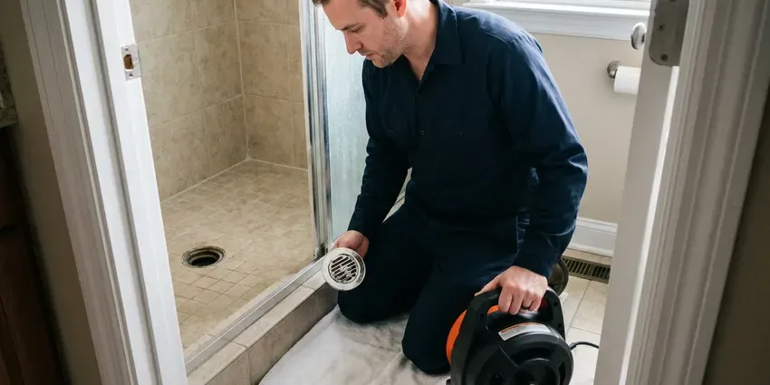
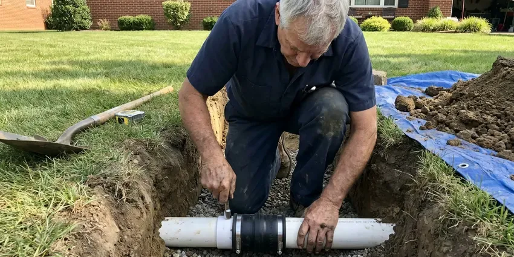
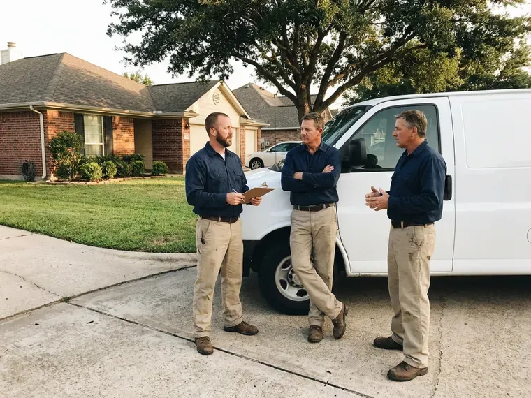

Drain Services in Winooski, VT
Get your drains flowing again with drain services in Winooski, VT, including hydro jetting, camera inspection and sewer line clearing.
- Same-Day Drain Service
- Experienced Plumbers
- Quick Clog Removal
- Sewer Line Experts
Professional Drain & Sewer Services in Winooski, VT.
Contact us today for fast, professional service and lasting solutions for your home.
Professional Drain Services for Winooski, VT Homeowners
CKV Plumbing offers a full spectrum of drain services for homeowners across Winooski, ensuring your plumbing system operates without issue. Town water systems in Winooski and other communities are generally reliable, but older service lines can add rust and discolored water. We understand the common challenges homes face, from hard water buildup to tree root intrusion, and we have the tools and expertise to address them.
Our expertise includes:
- Modern drain camera inspections
- High-pressure hydro jetting for stubborn clogs.
- Hydro jetting that removes grease, scale and tree roots

Additional Drain Services Services in Winooski, VT
From stubborn kitchen clogs to main sewer backups, our drain services in Winooski, VT restore full flow fast and keep it that way.


Professional drain cleaning, Winooski



Sewer Line Replacement near Winooski


Customers
Why Choose CKV Plumbing for Drain Services in Winooski, VT?
Our expertise in drain services ensures that we not only clear the immediate problem but also diagnose underlying causes, providing durable solutions matched to your home's needs.
- Advanced Tools, Our team uses modern equipment like video inspection cameras and powerful hydro jetters for accurate and effective service.
- Lasting Solutions, Our goal is to provide repairs and replacements that hold up for years, preventing recurring issues and protecting your home's plumbing system.
- Long-Term Fixes, We focus on providing solutions that last, rather than just quick fixes, saving you money and time.
Citywide Coverage
CKV Plumbing proudly serves every neighborhood of Winooski, ensuring that no matter where you are, dependable drain services are just a phone call away. We understand the local plumbing needs across our community.
Experienced Team
Our team of plumbers is very experienced in diagnosing and resolving all types of drain and sewer issues common in Vermont homes. They undergo continuous training on the latest techniques and equipment, ensuring top-tier service for our Winooski customers.
Safety-First Approach
All drain service procedures are conducted with the utmost attention to safety, employing proper personal protective equipment and secure work practices. We ensure your home's plumbing system meets all code requirements.
Trusted Certified Winooski Plumbing Services Professionals
At CKV Plumbing, we take pride in providing certified plumbing services throughout Winooski, VT. Backed by recognized industry credentials, our experienced plumbers combine technical skill with genuine customer care. Whether it is repair, installation, or maintenance, we follow strict safety and quality standards to deliver lasting results you can trust.
Call Us Now PHCC Plumbing Contractor Recognition
PHCC Plumbing Contractor Recognition Better Business Bureau (BBB) Accreditation
Better Business Bureau (BBB) Accreditation Angi Certified Pro
Angi Certified Pro ISO 9001 Quality Management Certification
ISO 9001 Quality Management CertificationThorough Drain Services in Winooski, VT
Hydro Jetting in Winooski
Hydro jetting sends water at up to 4,000 psi through a specialized nozzle that scours the full inside wall of the pipe. Unlike a cable, which punches a hole through the clog, jetting removes grease, scale and fine roots fully. It is the go-to method for restaurant drains and lines that clog again within months. We camera the line first to make sure the pipe is sound enough for jetting. Most residential jetting jobs take two to three hours.

Advanced Sewer Cleaning in Winooski, VT
When the problem lies deeper within your main sewer line, our sewer cleaning services are the answer. We use specialized equipment to clear blockages caused by tree roots, sludge, and debris that accumulate over time. Ignoring sewer line issues can lead to whole-house backups throughout your home, a situation no homeowner in Winooski, VT wants to face. Our goal is to prevent such emergencies with thorough cleaning.
Emergency Drain Unblocking in Winooski, VT
A completely blocked drain or a sewage backup is an emergency that requires immediate attention. CKV Plumbing provides rapid response for emergency drain unblocking services in Winooski, VT. We understand that these situations can cause significant stress and potential health hazards. Our technicians are available to quickly diagnose and clear severe blockages, restoring functionality and peace of mind to your home.
Sewer Cleaning & Hydro Jetting in Winooski, VT
Main sewer line issues can affect all drains in your Winooski home. Our sewer cleaning services include thorough inspections to pinpoint blockages, often caused by tree roots, sludge, or foreign objects. For the toughest clogs, we use hydro jetting, which uses high-pressure water streams to scour the inside of your pipes, removing even hardened scale and persistent debris. This method is very effective for complete pipe restoration.
Drain Jetting and Unblocking for Businesses in Winooski
Restaurant kitchens, salons and multi-unit buildings put far more grease, hair and debris down their drains than a typical home. We clear floor drains, grease lines and main sewer lines, often after hours to avoid closing. Scheduled jetting every three to six months keeps grease lines open and cuts down on emergency calls. We can also coordinate with grease trap pumping. Service records are provided for health inspections.
Comprehensive Drain Cleaning in Winooski
Slow or stopped drains are a frequent headache for homeowners in Winooski. Our drain cleaning service uses various methods, including snaking and augering, to remove hair, grease, soap scum, and other obstructions. We can clear clogs from sinks, tubs, showers, and floor drains, restoring proper flow fast. Town water systems in Winooski and other communities are generally reliable, but older service lines can add sediment and discolored water. We also address mineral buildup inside pipes, which hard water can make much worse.
Expert Sewer Line Replacement in Winooski
Sometimes, a sewer line is beyond repair due to severe damage from tree roots, corrosion, or ground shifts. Our sewer line replacement services in Winooski offer both traditional excavation and trenchless options. Trenchless methods limit disruption to your yard and landscaping, which is often a preferred solution for homeowners. We ensure all replacements meet current Winooski plumbing codes for durability and longevity.

High-Power Hydro Jetting in Winooski
For the toughest clogs and stubborn buildup, hydro jetting is an extremely effective solution. This method uses high-pressure water streams to scour the inside of your pipes, removing grease, mineral deposits, scale, and even small tree roots. It's an excellent preventative measure for older homes in Winooski with cast iron pipes, providing a comprehensive cleaning that traditional snaking cannot match. This leaves your pipes clean from wall to wall.
Drain Services Near Me in Winooski, VT
Local plumbers know the pipe materials, soil and tree species common in your area, which helps us predict what is causing a clog. We recommend fixes that last instead of repeat visits. Call us for an upfront price.
Our local presence means we can reach your home or business quickly, providing fast solutions for all your drain and sewer needs. Don't let a clogged drain disrupt your day, choose the local experts at CKV Plumbing for reliable and effective service in Winooski.
CKV Plumbing at a Glance
- Licensed and insured plumbers serving Winooski, VT
- Same-day appointments and 24/7 emergency response
- Clear written estimates, no hidden fees
- 4.8-star rated by 553+ Vermont customers
Winooski Map
Winooski Information
- Population
- 8,251
- Area codes
- Local
- Service area
- Winooski and communities within 40 miles
- Nearby
- Burlington, Essex Junction, South Burlington, Shelburne
Hard water scale, tree roots in older sewer lines and sudden storm runoff make professional drain services essential for homes and businesses in Winooski, VT.
Expert Services
Trust our professionals for reliable CKV Plumbing solutions in Winooski, VT.
Our Specialized Plumbing Services in Winooski, VT
At CKV Plumbing, we provide a complete range of plumbing services across Winooski, VT. From leak detection to full system installations, our team ensures fast, precise, and affordable service for both residential and commercial properties. Explore our core services below:


How Our Drain Services Process Works in Winooski, VT
Our drain service process is designed to be straightforward and effective, getting your plumbing back to normal with minimal disruption.
Request a Quote
Contact us at (802) 209-5139 to describe your drain issue. We will schedule a good time for a professional to assess your plumbing needs and provide an upfront quote.
On-Site Diagnosis
Our technician arrives on time, performs a thorough inspection using diagnostic tools like drain cameras, and identifies the exact cause and location of your drain problem.
Expert Resolution
We implement the most effective solution, whether it is drain cleaning, hydro jetting, or sewer line repair. We ensure the work is done cleanly and efficiently, restoring your drain function.
Frequently Asked Questions About Drain Services in Winooski
Basic sink or tub drain cleaning typically costs $150 to $350. Main sewer line cleaning typically runs $250 to $600, and hydro jetting often costs $400 to $900 depending on line length and accessibility.
Most single fixture drain cleanings take under an hour. Main line cleaning and hydro jetting usually take one to three hours.
Yes, most drain cleaning comes with a service guarantee for a set period. If the same line clogs again in that window, we come back and clear it.
Yes, CKV Plumbing stands behind our work. We offer warranties on our drain cleaning and repair services, with specific terms depending on the type of service performed. Details will be provided with your invoice.
Tree roots are naturally attracted to the moisture and nutrients inside sewer lines, and dry spells can make them seek out any available water source. Tiny cracks or loose joints in older sewer pipes provide an entry point, allowing roots to grow and eventually block the line. Clay soils in river valleys drain poorly and can hold water against foundations, so sump pumps are common in low-lying homes. Shifting soil can also contribute to pipe movement, creating these access points.
Our technicians are experienced with all major brands of plumbing fixtures and drain components, including Moen, Delta, Kohler, American Standard, and more. We ensure any replacement parts are compatible and high quality.
When it comes to drain services, our focus is on clearing and repairing the pipes themselves, rather than specific fixture brands. However, our technicians are familiar with all major plumbing fixture brands like Moen, Delta, Kohler, and American Standard, and can address any issues related to their drain assemblies during service.
A typical drain cleaning for a single clogged fixture can take anywhere from 30 minutes to 2 hours, depending on the severity and location of the clog. More complex issues, like main sewer line clearing or hydro jetting, may require several hours. We provide an estimated timeline after our initial assessment.
What People Are Saying About Our Plumbing Experts?

Laura S.
I scheduled a water heater replacement, and the team made the process smooth and affordable. The new unit works perfectly, and they cleaned up after completing the job.
Water Heater Replacement · Winooski, VTEmily R.
I called CKV Plumbing for plumbing repair, and the technician was fast, polite, and thorough. They explained the problem clearly and fixed it the same day. I will definitely hire them again. Highly recommended!
Plumbing Repair · South Burlington, VT
Robert G.
The trenchless sewer replacement saved our front yard. They walked us through the camera inspection footage first so we knew exactly what we were paying for.
Sewer Line Replacement · Middlebury, VT
Daniel K.
A pipe burst at 11 pm and they actually answered. The plumber showed up within the hour, shut everything down, and had us back to normal the next morning. Could not ask for more.
Emergency Plumbing · Winooski, VT
Mark T.
When our office needed drain cleaning, CKV Plumbing provided quick, reliable service. The plumber arrived on time and made sure every drain flowed perfectly before leaving. Very satisfied.
Drain Cleaning · Essex Junction, VT
Patricia H.
We had a slab leak that two other companies could not find. CKV Plumbing located it in under an hour, explained our options, and the price matched the quote to the dollar.
Slab Leak Repair · Middlebury, VT